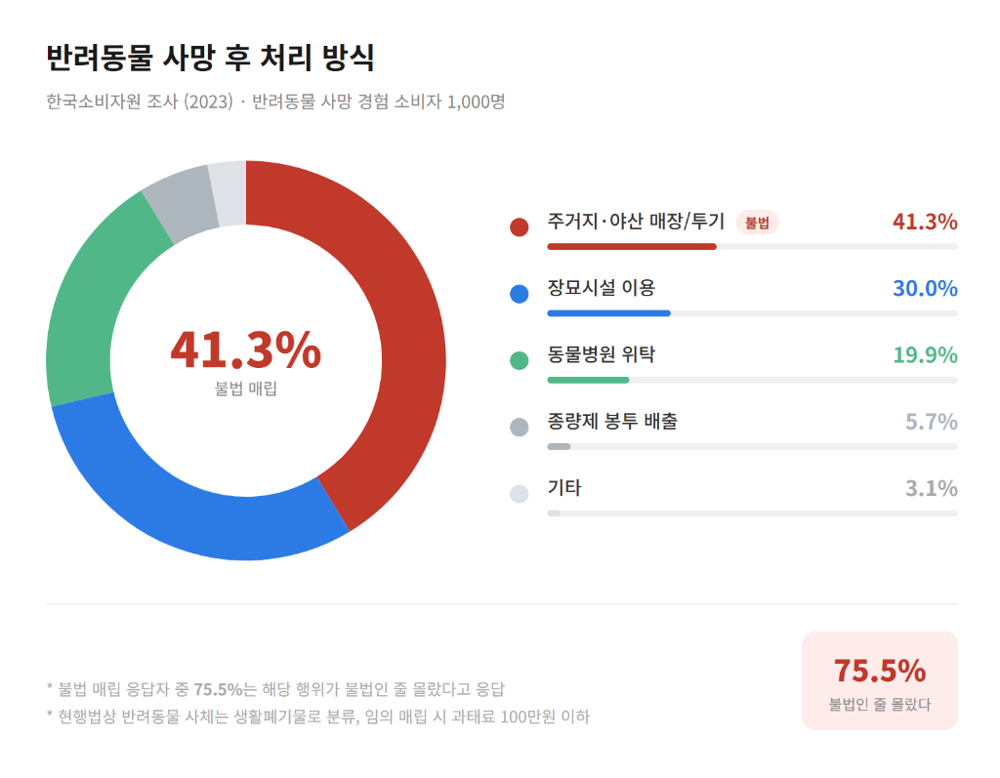
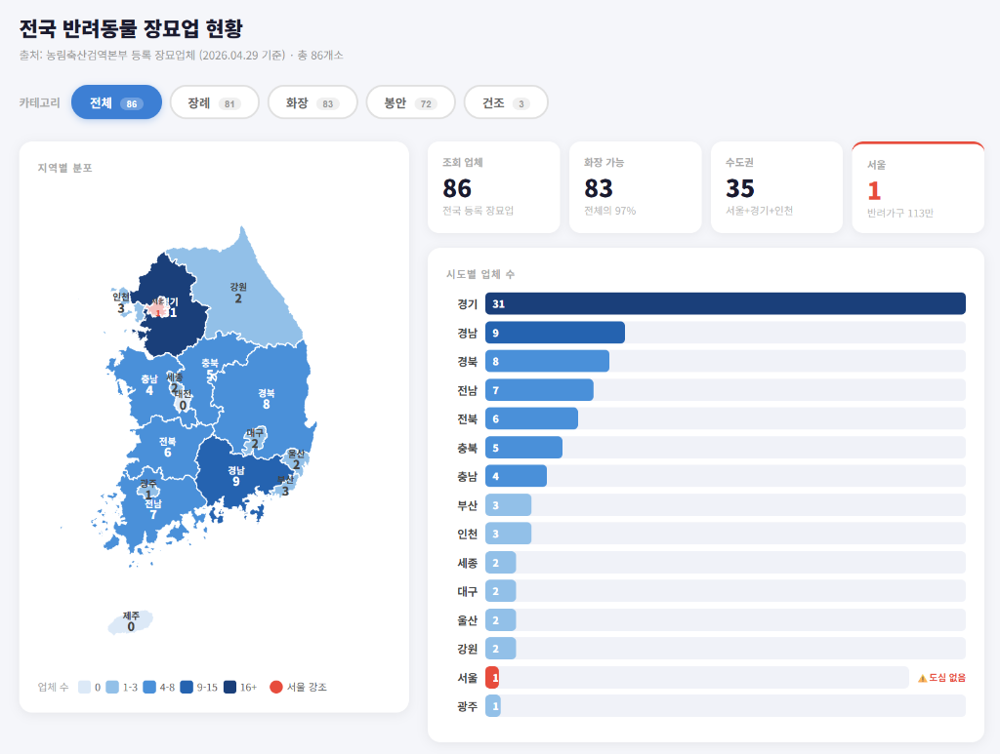
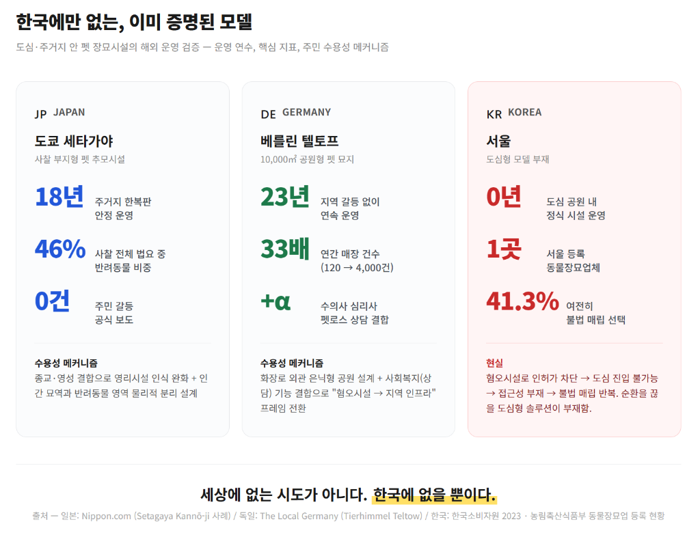
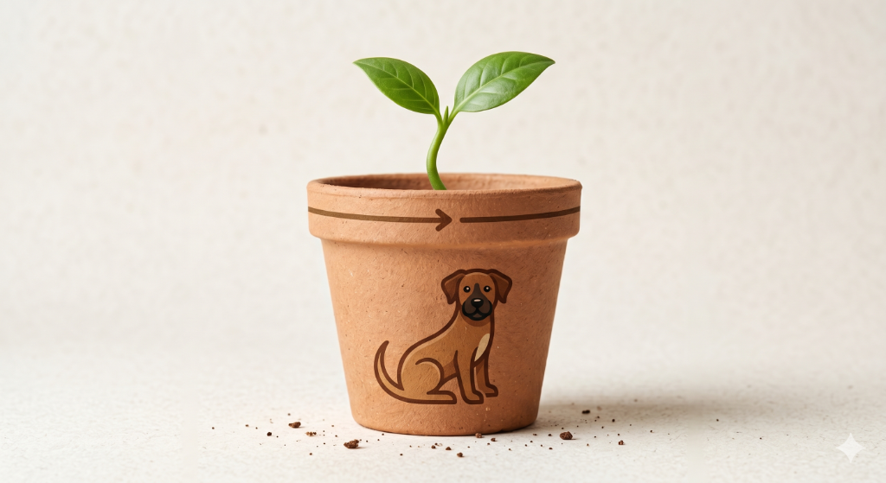

2026.05.14 18:33 제출 · 원문 그대로 옮김
어렸을 때 키우던 개가 죽었다. 내가 그 기억을 더듬으면 떠오르는 건 쓰레기봉투다.
법적으로 반려동물의 사체는 생활폐기물이다. 종량제 봉투에 담아 내놓으면 된다. 그날 우리 가족은 법을 지킨 것이다. 하지만 그것이 옳은 일이었다고 느낀 적은 한 번도 없었다. 어린 나이였고, 선택지가 없었다. 어른들도 마찬가지였을 것이다.
수십 년이 지났다. 세상은 달라졌을까. 2023년 한국소비자원이 반려동물 사망 경험 소비자 1,000명을 조사했다. 41.3%가 여전히 불법 매립을 선택했고, 그중 75.5%는 불법인 줄도 몰랐다. 전국 동물 장묘업체는 86곳, 서울에는 단 1곳이다. 수치가 말하는 건 하나다. 구조는 바뀌지 않았다.
왜일까? 장묘시설은 도심 설치가 제한되어 인허가 자체가 막힌다. 시설이 도심으로 들어오지 못할수록 죽음은 더 낯설어지고, 낯설수록 혐오는 강해진다. 혐오가 강해질수록 시설은 더 멀어진다. 반려동물의 마지막이 쓰레기봉투에 담기는 건 사람들이 나빠서가 아니다. 사회가 죽음을 밀어낸 구조가 만든 결과다. 혐오시설을 외곽으로 더 밀어내는 것으로는 이 순환이 끊어지지 않는다.
이 순환을 끊으려면 죽음이 삶 안으로 들어와야 한다. 공원은 삶의 공간이다. 그리고 삶 안에는 이미 죽음이 있다. 우리가 외면해왔을 뿐이다. 죽음을 특별한 공간에 가두는 것이 아니라, 강아지와 함께 뛰놀던 그 공원에 자연스럽게 놓는 것. 그곳에 반려동물의 마지막을 함께할 수 있는 장묘 시설을 짓겠다. 그것이 이 오래된 구조를 바꿀 수 있는 방법이라고 생각한다.
41.3%가 불법 매립을 선택했다. 그중 75.5%는 불법인 줄도 몰랐다.
이 수치를 처음 봤을 때, 나는 '무지'가 아니라 '부재'를 읽었다. 모르는 게 아니다. 알 수 있는 환경이 없었던 것이다. 서울에 동물 장묘업체가 단 1곳이라면, 대부분의 사람은 그 선택지를 마주칠 기회 자체가 없다. 불법인지 몰랐다는 건, 그 죽음이 사회에서 얼마나 철저히 지워져 있었는지를 보여주는 숫자다.

문제를 겪는 사람은 그 공원을 매일 걷는 사람이다. 강아지와 함께 산책로를 걷는 수도권 반려가구. 1인 가구도, 아이 있는 가족도, 은퇴한 부부도 — 그 길을 걷는 모든 사람이다. 그런데 그 공원 어디에도 죽음 이후의 선택지는 없다. 장묘업체가 경기 외곽에 있다는 걸 알더라도, 거리가 또 다른 장벽이 된다. 그가 불법 매립을 선택했을 때, 그건 나쁜 선택이 아니었다. 걸어갈 수 있는 거리에 다른 선택지가 없었을 뿐이다.
해결은 '찾게 만드는 것'이 아니라 '이미 거기 있는 것'이어야 한다. 우리는 사람들이 매일 지나치는 도심 공원 안에 장묘 시설을 짓는다. 강아지가 죽으면, 보호자는 늘 걷던 그 공원으로 간다. 건조 처리 후 유골은 화분이 되어 보호자의 손에 돌아온다. 멀리 가지 않아도, 검색하지 않아도. 선택지가 존재한다는 사실 자체를 사람들은 그냥 알게 된다.
이 노출이 세 가지를 동시에 해결한다. 차 없는 1인 가구도 접근할 수 있다. 보이는 것은 더 이상 금기가 아니게 된다. 그리고 75.5%가 경험한 '부재'는, 매일 걷는 공원 안의 존재로 채워진다.
죽음 이후의 선택지는 특별한 노력 없이도 닿을 수 있는 곳에 있어야 한다. 그게 가능하다는 건 이미 증명됐다. 일본 도쿄 세타가야의 사찰 부지 펫 추모시설은 주거지 한복판에서 18년간 운영되며, 법요(추모식)의 46%가 반려동물이면서도 기존 신도들과 갈등 없이 자리 잡았다. 독일 베를린 텔토프의 공원형 펫 묘지는 23년간 지역 갈등 없이 운영되며 매장이 33배 성장했다. 세상에 없는 시도가 아니다. 한국에 없을 뿐이다.

기술 실현 가능성은 선행 사례로 증명됐다. 본 사업의 핵심은 지자체 협력 모델의 정립이다. 이 기간 내에 해외 도심형 장묘 사례·실증특례 선례·이해관계자 인터뷰를 교차 분석해 협력 제안서를 완성하고, 이를 기반으로 부지 점용 협약 단계로 진입한다.

